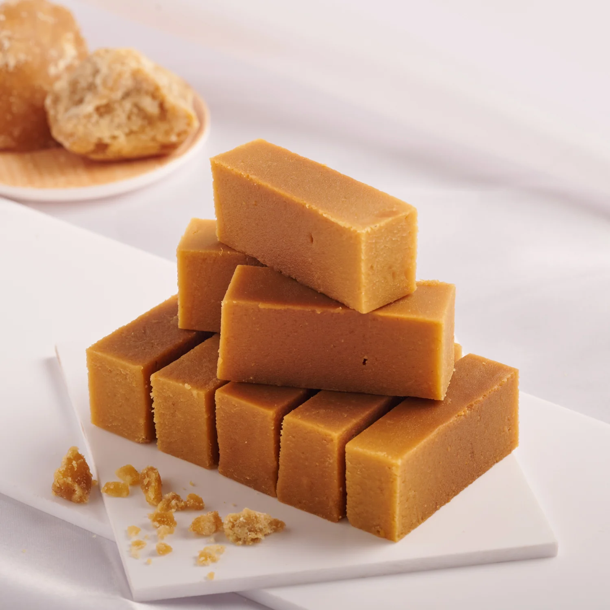
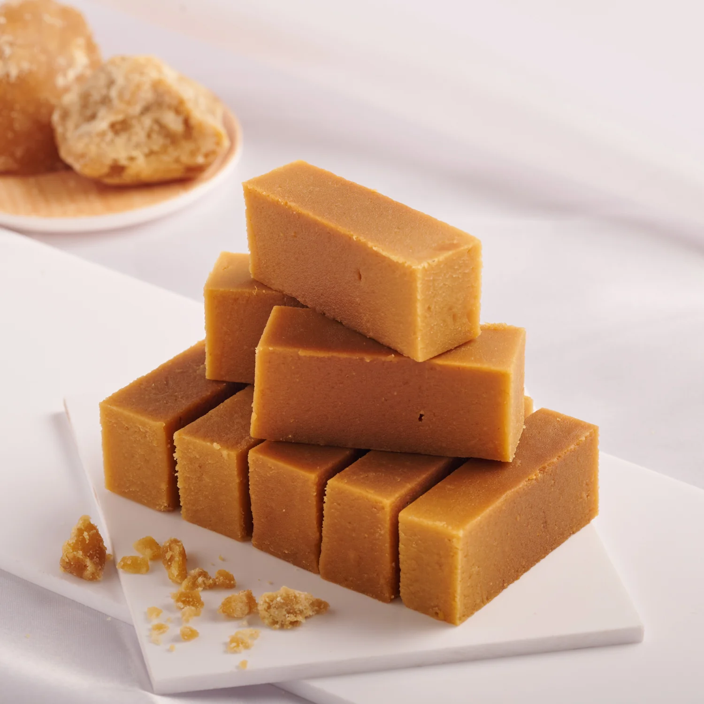
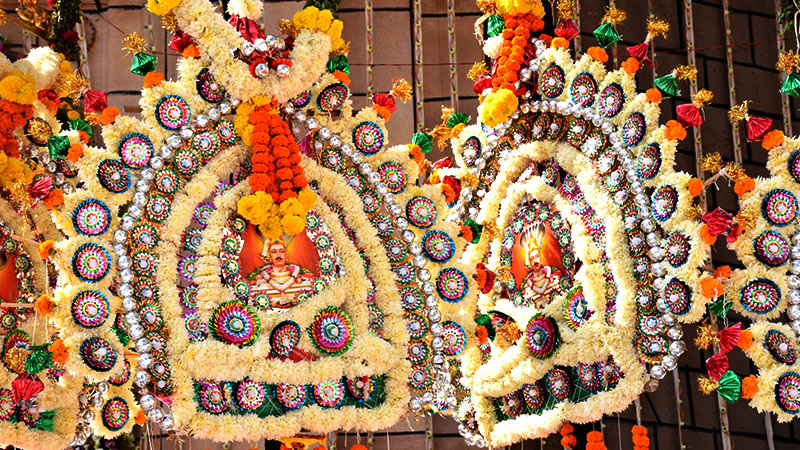
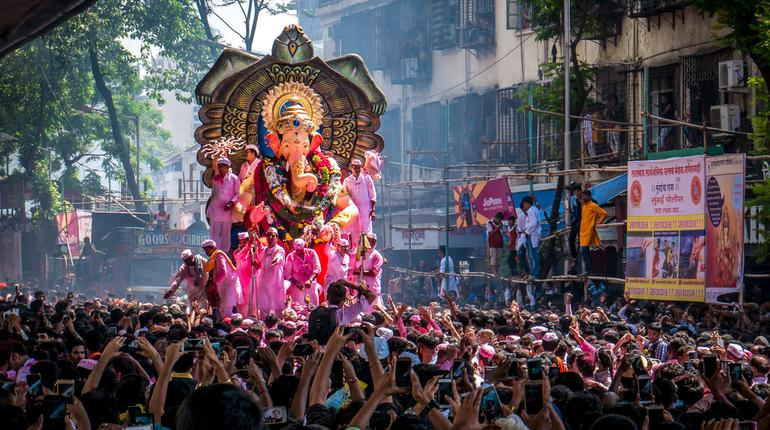
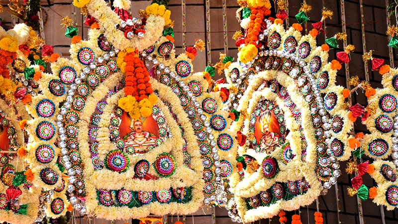
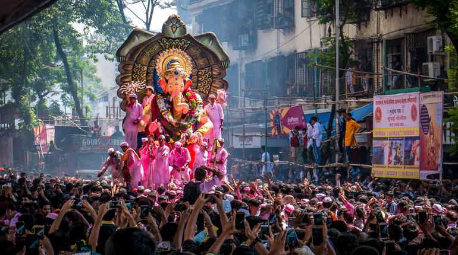
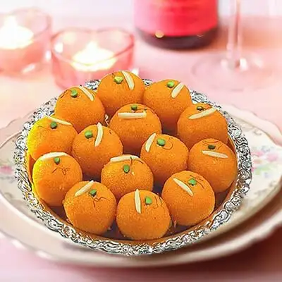
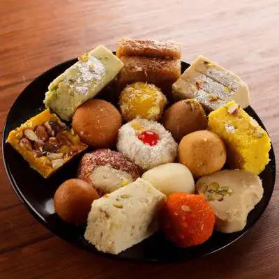
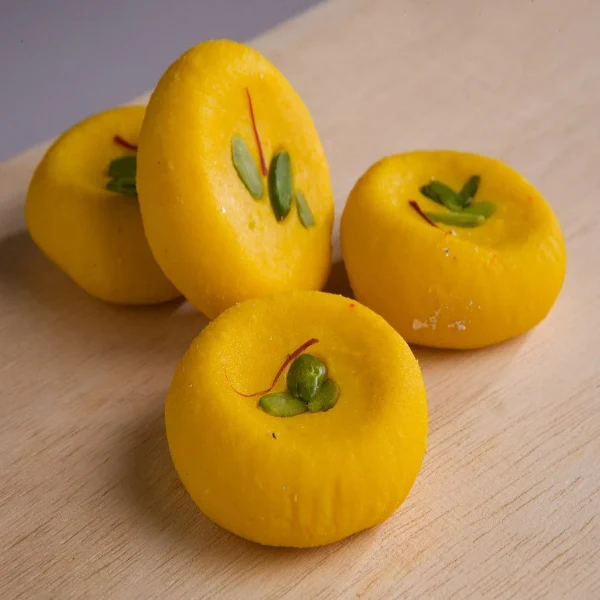

 





Karnataka, located in southern India, is a state known for its diverse culture, historical landmarks, and technological advancements.
Karnataka boasts a rich history, with magnificent architectural wonders like the Hampi ruins, a UNESCO World Heritage Site, and the Mysore Palace, showcasing Indo-Saracenic grandeur.Karnataka is also known for its vibrant festivals, including Dasara in Mysuru, which attracts tourists from around the world.


